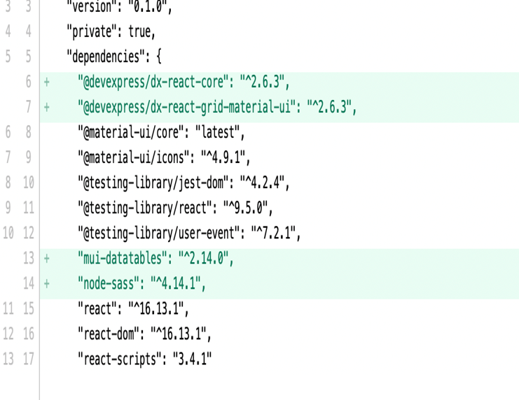
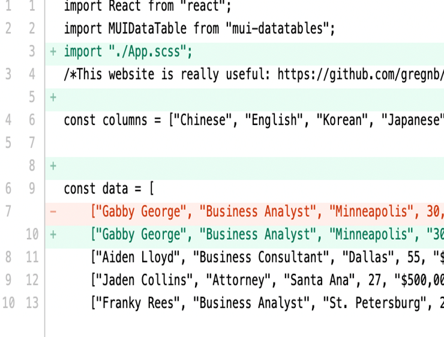

<!-- Modal that pops up when you click on image icon" -->
<div id="version-popup" class="w3-modal w3-animate-zoom" style="z-index:3; background-color: transparent">
	<div class="w3-modal-content" style="padding-top: 20px; padding-right: 20px; padding-left: 20px; background-color:#e6e6e6; width: 600px">
		<i class="fas fa-times w3-right w3-xlarge" onclick="hideVersion()"></i>

		<!--  title	-->
		<h4 id="version-title">Previous version for draft.doc</h4>

		<div class="w3-container">
			<div class="sidenav w3-cell-top w3-cell">
				<a id="version2-button" class="version-buttons" style="background-color: white" onclick="changeVersionDisplayed(this.id,'version2-graph')">Version 2</a>
				<a id="version1-button" class="version-buttons" onclick="changeVersionDisplayed(this.id,'version1-graph')">Version 1</a>
			</div>

			<div class="w3-cell">
				
				
			</div>
		</div>

		<div class="w3-panel">
			<div class="w3-section w3-right">
				<button class="w3-button w3-blue" onclick="changeFileVersion()"></i>Go back to this version</button>
				<button id="share-related-graph-button" class="w3-button w3-blue" onclick="showPopup()">Share<i class="fa fa-paper-plane" style="margin: auto 5px"></i></button>
			</div>
		</div>
	</div>
</div>